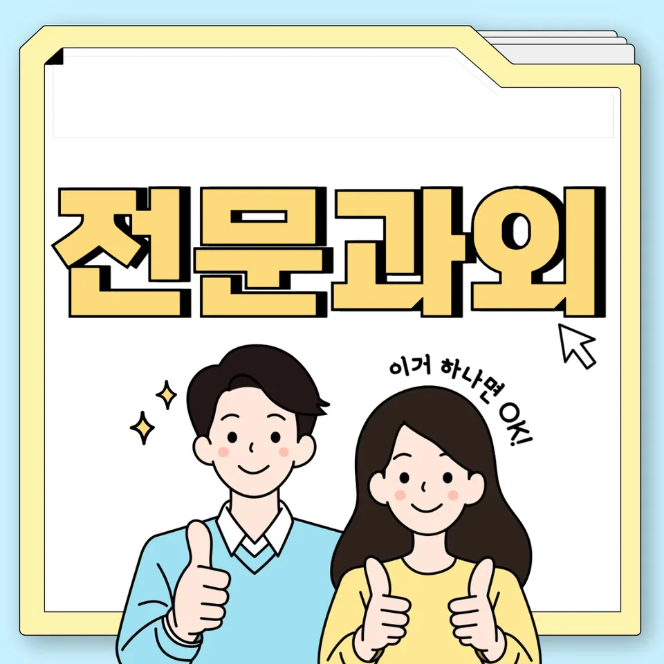

PageType : SUBJECT
URL : /경기도과외/여주시과외/현암동과외/현암동영어과외/
지역 교육환경이 영어 학습에 미치는 영향
현암동영어과외를 준비하는 학생들은 같은 학교를 다니더라도 학습 분위기 차이를 먼저 마주합니다. 동네 내 스터디 문화, 도서관·학원가에서 흔히 보이는 독해 중심의 루틴, 수업 외 시간에 영어를 접하는 방식이 서로 달라서 영어 학습의 출발선이 달라지곤 합니다. 특히 영어는 “한 번의 공부로 끝나는 과목”이 아니라 누적되는 과목이라, 초반에 형성된 습관이 이후 듣기와 읽기의 균형을 좌우합니다.
현암동영어과외의 학습 흐름을 보면 학교 수업에서 다룬 내용이 집에서 어떻게 이어지는지가 곧 성격을 바꿉니다. 어떤 학생은 문장 해석을 빠르게 하려다 듣기·발음 감각을 놓치고, 또 다른 학생은 듣기에만 집중하다가 어휘와 문장 구조를 정리하지 못해 독해 속도가 늦어집니다. 여기서 학부모가 자주 느끼는 고민은 “무엇을 더 해야 하는지”보다 “무엇을 빼면 안 되는지”를 찾는 과정에 가깝습니다.
지역별 교육 특성과 학습 문화가 분명할수록 학생의 공부습관은 빨리 고정됩니다. 문제는 그 고정이 반드시 효율적이지 않다는 점입니다. 예를 들어 시험 직전엔 독해 지문을 많이 읽지만, 평소엔 문장 이해를 굳히지 않는 학생이 현암동영어과외에서도 종종 나타납니다. 이때 영어 실력은 꾸준한 학습이 쌓일 때 성장하지만, 중간 점검 없이 넘어가면 어휘·구문의 누락이 다음 달 학습 부담으로 연결됩니다.
학교마다 달라지는 영어 평가 방식
현암동영어과외에서 가장 자주 조정하는 지점은 평가 방식의 차이를 학습 전략에 반영하는 일입니다. 학교에서는 시험 범위가 공지되지만, 실제 채점 기준은 독해 정확도, 문법의 적용, 어휘 선택, 그리고 서술형에서의 구문 처리 방식처럼 세부가 다르게 작동합니다. 같은 문장을 풀어도 학교마다 강조하는 능력이 달라서, 학생이 “내가 틀린 이유”를 제대로 설명하지 못하면 오답이 반복될 가능성이 커집니다.
학생들은 학교 영어 수업에서 개념을 배우고 문제를 풉니다. 하지만 평가가 “정답” 위주로 끝나면 학습은 끝난 것으로 착각하기 쉽습니다. 그래서 현암동영어과외에서는 학교에서 받은 피드백이 복습으로 이어지는 흐름을 먼저 점검합니다. 오답 목록을 단순히 다시 풀게 하는 것이 아니라, 틀린 문장의 어휘 단서와 문장 구조를 분해해 이해가 어디에서 끊겼는지 확인하는 방식이 필요합니다.
수행평가는 특히 학생의 자기주도학습에 대한 기대치를 키웁니다. 듣기 자료를 기반으로 정리하거나, 읽기 내용을 요약해 표현하는 형태가 섞이면 독해와 문법, 어휘가 함께 움직여야 합니다. 현암동영어과외의 학습 계획은 시험 준비와 수행평가 준비가 따로 놀지 않도록 연결선을 만드는 데 초점을 둡니다.
학생들이 영어에서 어려움을 느끼는 시점
대체로 학생들이 영어에 흥미를 잃는 시점은 “문제 유형이 바뀌는 순간”과 맞닿아 있습니다. 초반에는 해석이 되면 성취감이 생기지만, 학년이 올라가며 문장 길이와 구문 밀도가 높아지면 같은 방식으로는 더 이상 속도가 나오지 않습니다. 이때 듣기에서 들리던 표현이 읽기에서는 낯설게 느껴지고, 어휘는 아는 것 같은데 선택이 흔들리는 경험이 늘어납니다.
현암동영어과외에서 확인되는 공통 신호는 학습이 반복되는데도 변화가 없는 상태입니다. 시험이 가까워질수록 더 많이 풀지만 오답이 줄지 않거나, 비슷한 실수를 계속하는 경우가 그 신호입니다. 학생은 “시간이 부족해서”라고 생각하지만 실제 원인은 어휘 누적 방식이나 문장 이해의 기준이 흔들리기 때문인 경우가 많습니다. 이때 복습이 계획에 포함되지 않으면 오답은 다음 단원에서 변형되어 다시 등장합니다.
학부모 입장에서는 “영어를 싫어한다”는 표현이 시작되기 전 단계에서 원인을 찾고 싶어 합니다. 그러나 대부분의 경우 싫어함은 과목 자체가 아니라 학습 과정의 방향이 흐트러졌을 때 나타납니다. 현암동영어과외에서는 어려움을 느끼는 이유를 ‘한 번의 큰 실패’가 아니라 ‘누적된 작은 이해 공백’으로 보고 접근합니다.
학년 변화에 따른 영어 학습의 차이
학년이 올라갈수록 영어 학습은 난이도만 오르는 것이 아니라 요구하는 사고 방식이 달라집니다. 초기는 문장 해석과 어휘 확인이 중심이 되지만, 점차 독해에서 전체 흐름을 잡고 구문을 근거로 의미를 재구성하는 능력이 필요해집니다. 현암동영어과외에서는 학습 부담이 커지는 시기에 맞춰 학습 시간을 늘리기보다, 시간 안에서 처리해야 하는 단계를 명확히 정리합니다.
예를 들어 중간 단계에서 학생이 문법을 ‘설명으로만’ 이해하면, 시험 문제에서 문법이 실제로 어떻게 쓰였는지 잡아내지 못합니다. 그래서 현암동영어과외는 문법을 개념 설명으로 고정하기보다, 독해와 문장 이해 과정에서 문법 요소가 어떤 단서를 주는지 연결합니다. 이 과정에서 구문이 해석 속도를 지탱하는 기반이 됩니다.
또한 듣기와 읽기의 균형도 학년 변화에 따라 달라져야 합니다. 어떤 학생은 듣기 비중이 높아질 때 리듬을 따라가지만, 읽기에서 문장 구조를 놓쳐서 독해가 흔들립니다. 반대로 읽기 위주의 습관이 강해지면 듣기에서 동일 표현을 알아차리는 시간이 길어집니다. 현암동영어과외에서는 듣기-읽기 사이에 이어지는 어휘·표현을 꾸준히 확인하며 균형을 유지하는 쪽으로 계획을 세웁니다.
내신과 수행평가를 함께 준비하는 방법
현암동영어과외에서 내신을 준비할 때는 시험 범위를 ‘문항 수’로만 보지 않고, 학교가 어떤 근거를 기준으로 평가하는지로 해석해야 합니다. 내신은 단원 기반으로 쌓이지만, 수행평가는 학습이 누적된 학생의 태도와 연결되는 경우가 많습니다. 그래서 학습 계획은 수업-복습-다음 시험까지의 연결 구조를 가져야 합니다.
수행평가 준비는 학생에게 자기주도학습의 역할을 요구합니다. 듣기 자료나 읽기 텍스트를 개인이 해석하고 정리하는 과정에서, 어휘 선택과 문장 구성의 기준이 필요합니다. 현암동영어과외는 이 기준을 “정답 문장 암기”가 아니라 오답의 원리로 세웁니다. 글을 읽다가 틀린 선택을 했을 때, 왜 그 어휘·구문이 적합하지 않았는지 설명할 수 있어야 다음 활동에서도 같은 실수를 줄일 수 있습니다.
시험 기간 학습 패턴도 달라집니다. 평소엔 이해를 쌓다가, 시험 전에는 시간 제한 속에서 정확도를 조절해야 합니다. 현암동영어과외에서는 시간 효율을 늘리는 방법을 ‘더 빨리’가 아니라 ‘먼저 잡아야 할 단서부터’로 지도합니다. 복습과 오답 정리를 병행할수록 시험 당일에는 긴장 상황에서도 읽기 흐름이 유지됩니다.
꾸준한 학습 습관이 만드는 영어 실력
영어 실력은 단기간에 끌어올리기보다, 반복되는 학습 구조 안에서 형성됩니다. 현암동영어과외를 받는 학생들의 변화는 대개 “공부습관이 유지되는 방식”에서 먼저 나타납니다. 매일 짧게 어휘와 문장 이해를 확인하고, 일주일 단위로 독해를 되짚으며, 학습이 끝나지 않도록 복습 루틴을 고정하는 형태가 그 습관입니다.
학생이 영어를 꾸준히 공부하는 습관을 만들면 듣기와 읽기의 경계가 낮아집니다. 듣기에서 들린 표현이 읽기에서 같은 의미로 재등장할 때, 학생은 자기 이해가 축적된 느낌을 받습니다. 이 감각이 영어에 대한 거부감을 줄이고, 다음 단원으로 넘어갈 때 “다시 시작”처럼 느끼지 않게 해줍니다. 현암동영어과외에서는 이런 연결감을 학습 계획의 중심에 둡니다.
학습 계획을 꾸준히 유지하는 과정은 결국 자기주도학습의 기반이 됩니다. 처음에는 교재와 단계가 필요하지만, 어느 시점부터는 학생이 스스로 오답을 찾아내고 다음 행동을 선택하기 시작합니다. 이때 영어는 더 이상 ‘문제를 푸는 과목’이 아니라 ‘이해를 확장하는 과정’으로 자리 잡습니다.
복습과 오답 관리가 중요한 이유
오답은 단순한 결과가 아니라 학습 과정에서 어디가 끊겼는지 알려주는 신호입니다. 현암동영어과외에서는 오답을 다시 푸는 행위를 넘어서, 틀린 원인을 분류하도록 돕습니다. 어휘를 잘못 선택했는지, 구문을 오해했는지, 듣기에서 놓친 단서를 읽기에서 반영하지 못했는지처럼 원인이 분명해져야 복습이 효과를 가집니다.
복습이 부족하면 ‘아는 것처럼 보이는 상태’가 계속됩니다. 시험 직전에는 맞추는데 다음 주에 다시 보면 흔들리는 패턴이 그 예입니다. 현암동영어과외에서는 복습과 오답이 이어지는 타이밍을 조정합니다. 수업 직후에는 문장 이해를 정리하고, 며칠 뒤에는 독해에서 같은 유형의 구문을 다시 만나게 하며, 오답이 반복되는 지점은 어휘-문법-문장 이해를 함께 묶어 재학습합니다.
시험 기간 학습 패턴이 바뀌어도 오답 관리의 역할은 줄지 않습니다. 오히려 긴장 상태에서는 같은 실수가 빨리 반복됩니다. 그래서 오답은 시험 전날에 “한 번 훑기”로 끝내기보다, 시험 전 여러 번 짧게 확인하며 복습의 감각을 유지하는 쪽이 더 안정적입니다. 현암동영어과외의 학습 과정은 이런 반복을 통해 영어에 대한 자신이 ‘감정’이 아니라 ‘근거 있는 이해’로 쌓이게 합니다.
영어 학습에서 확인해야 할 핵심 요소
학습 과정에서 가장 먼저 확인할 핵심 요소는 학생이 독해에서 문장 의미를 어떻게 조립하는지입니다. 영어는 문장을 통째로 외우는 방식으로만 늘지 않습니다. 어휘가 누적되고, 문법이 실제 문제에서 의미 단서를 제공하며, 구문이 문장 흐름을 잡아줄 때 영어 실력은 안정적으로 확장됩니다. 현암동영어과외에서는 이 연결 고리를 끊지 않도록 점검합니다.
둘째, 듣기와 읽기의 균형입니다. 듣기만으로 맞히는 학생은 읽기에서 근거가 약해지고, 읽기만으로 밀어붙이는 학생은 발화나 억양의 감각을 놓치며 다음 단계에서 속도가 떨어집니다. 듣기에서 익힌 표현이 읽기에서 어떤 역할을 하는지, 읽기에서 본 구문이 듣기에서 어떤 단서로 작동하는지 함께 확인하는 방식이 필요합니다.
셋째, 영어 학습에서 자신감이 형성되는 과정입니다. 자신감은 성적이 곧바로 올라서 생기는 느낌만이 아닙니다. 오답 분석을 통해 “이번엔 왜 틀렸는지”를 말할 수 있을 때, 학생은 공부습관을 더 오래 유지하게 됩니다. 그 결과 자기주도학습이 자리 잡고, 복습과 오답 정리가 다음 학습의 출발점이 됩니다.
- 학교 시험 범위와 학습 계획이 연결되고 있는지 확인합니다.
- 독해·문법·어휘를 분리하지 않고 함께 학습하는 습관을 기릅니다.
- 오답의 원인을 분석하고 반복되는 실수를 줄이는 과정을 이어갑니다.
- 정기적인 복습으로 학습 내용을 장기 기억으로 연결합니다.
자주 묻는 질문
영어 학습은 언제부터 체계적으로 준비하는 것이 좋을까요?
학년이 올라가기 전, 단원 난이도가 변하기 시작할 때 체계를 잡는 편이 유리합니다. 현암동영어과외에서는 특히 어휘 누적 방식과 독해에서 문장 의미를 조립하는 기준을 먼저 정리해 두는 시점을 강조합니다.
학교 내신과 모의고사는 어떻게 함께 준비해야 하나요?
내신은 학교가 평가하는 방식에 맞춰 복습과 오답 관리를 중심으로 준비하고, 모의고사는 독해 흐름을 빠르게 유지하는 연습을 더합니다. 현암동영어과외는 두 시험이 요구하는 집중 지점을 분리하되, 어휘·구문·문장 이해의 기본은 하나로 유지하도록 구성합니다.
영어 독해 실력은 어떤 과정으로 향상될 수 있나요?
지문을 많이 읽는 것보다, 한 문장에서 의미를 확실히 조립하는 연습이 먼저입니다. 현암동영어과외에서는 어휘 선택 근거와 문장 구조를 확인하며 독해의 정확도를 쌓고, 이후 속도를 조절해 균형을 만듭니다.
어휘와 문법은 어떤 순서로 학습하는 것이 효과적인가요?
어휘는 단어를 외우는 데서 끝내지 않고 문장 속에서 어떤 의미 단서를 주는지 확인해야 합니다. 문법은 설명을 읽고 끝내기보다, 실제 독해와 문제에서 구문이 의미를 어떻게 바꾸는지 적용 경험을 쌓는 순서가 효과적입니다. 현암동영어과외는 이 순서를 반복해 누적되게 합니다.
공부 습관을 꾸준히 유지하려면 무엇이 중요할까요?
큰 목표보다 짧은 루틴이 먼저입니다. 현암동영어과외에서는 매일의 듣기·읽기 확인과 주간 복습, 오답 정리의 빈도를 일정하게 만들어 공부습관이 자연히 이어지도록 돕습니다. 그 과정에서 자기주도학습이 자리 잡고, 시험 기간에도 학습이 무너지지 않습니다.
